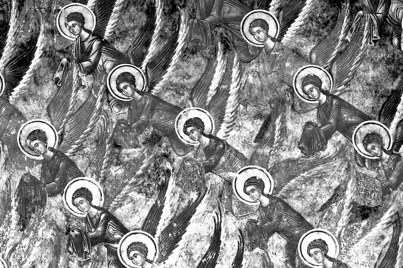

STUDIU FUNDAMENTAL (1954) AL DIACONULUI PROFESOR GHEORGHE I. MOISESCU
ULTERIOR PATRIARH AL BISERICII ORTODOXE ROMÂNE
IUSTIN MOISESCU (19 IUNIE 1977 - 31 IULIE 1986)
La 16 iulie 1054, când trufașul cardinal Humbert arunca pe prestolul bisericii Sfânta Sofia din Constantinopol anatema, prin care excomunica pe patriarhul ecumenic Mihail Cerularie și pe toți „părtașii lui”1, românii abia se iviseră în istorie ca popor aparte2. Împărțiți și învăluiți de alte neamuri, ei n-au putut grabnic să-și întocmească un stat al lor cu Domn și Vlădică, așa ca să ne lase urme scrise, ci și-au dus viața lor pașnică, păscând turme, arând pământul sau cărând mărfuri pe cai însămărați3. Tăinuit sub felurite numiri străine, ținutul acesta străjuit de Tisa, Dunăre și Carpați, - având înfățișarea unei cetăți întărite de Dumnezeu cu ziduri de munți, cu văi de ape adânci, cu păduri nestrăbătute și câmpii întinse - nu poate fi deslușit decât târziu de tot în istoriile cronicarilor. Totuși, în letopisețele grecești, latine sau slavone de prin veacul XI-XII sunt amintiți rareori și românii pentru fapte de vitejie, pentru treburi de credință sau felurite alte întâmplări4.
Așadar, ce puteau afla românii răsfirați, creștini dintru început, despre dezbinarea bisericească numită „schismă”, când nici alte popoare vecine mai întinse și mai puternice decât ei nu știau încă nimic cu privire la ruperea legăturilor de dragoste și de bună înțelegere dintre Biserica de Răsărit și Biserica de Apus5. Este adevărat că săvârșirea schismei la 1054 a trecut pentru contemporani fără interesul și răsunetul ce am crede azi că trebuie să fi avut6. Unitatea bisericească nu se socotea atunci nici pentru întâia oară și poate nici cu totul ruptă. Neînțelegeri care să fi tulburat pentru o vreme legăturile dintre Constantinopol și Roma erau de mult obișnuite. Chiar și epoca de înflorire bisericească a sinoadelor ecumenice a cunoscut unele încercări de schisme7.
Deși unii istorici cred că raporturile dintre Biserica de Răsărit și cea de Apus au fost bune până în anul 10548 și că legăturile dintre popoare au rămas nestingherite și după aceea9, se dovedește totuși că despărțirea Bisericilor din veac. IX și XI nu poate fi privită în chip mărginit și socotită drept fapta unui patriarh de Constantinopol, izvorâtă doar din ura grecilor față de latini, sau din pricina unor pretenții deșarte de neatârnare bisericească10. Într-adevăr, schisma are la obârșie și aceste pricini mari și mici, fără de care de s-ar fi întâmplat, ar fi fost mai târzie și poate mai puțin primejdioasă. Deosebite însă treptat ca limbă, cultură și tradiție, despărțite prin împărțirea imperiului roman și prin toată istoria imperiului bizantin, prin mutarea capitalei la Constantinopol și întemeierea patriarhiei ecumenice, și totodată prin osebiri religioase în doctrină, cult și pravilă, cele două lumi, Răsăritul și Apusul s-au despărțit necontenit în două Biserici aparte: greacă și latină, ortodoxă și papală, strânse una în jurul Constantinopolei, iar alta în jurul Romei.
Firește că deosebirile acestea nu pricinuiau singure schisma, dar ele o îndreptățeau cu prisosință, sortind-o să dăinuiască până azi11. Afară de aceasta, împrejurările istorice au adus patriarhului de Constantinopol – întâiul ierarh al imperiului bizantin – o sporire de teritorii și de cinstire, pe care Roma n-a putut s-o sufere și s-o îngăduie niciodată12, căutând s-o nimicească cu orice preț.
Însă, oricare ar fi lămurirea schismei și a faptului că ea a trecut pentru contemporani aproape nebăgată în seamă, este ușor de înțeles de ce patriarhii Fotie și Mihail Cerularie și toți urmașii lor au răspuns cu atâta înverșunare. Învinuiți de erezie și disprețuiți cu atâta îngâmfare de Roma papală, care năzuia la oblăduirea și subjugarea Constantinopolului, ei au căutat să apere cu îndârjire simțămintele ortodoxe ale Răsăritului întreg. Dacă papa pretindea pentru sine Ortodoxia și dreptul de a fi mai presus de toți, patriarhul ecumenic, care se știa drept-credincios și pe aceeași treaptă cu episcopul Romei, nu putea suferi această umilire.
Acesta este tâlcul celor întâmplate în sec. IX și XI și pe bună dreptate s-a spus că „schisma nu s-ar fi produs și manifestat în formele cunoscute, dacă din cele două Rome, egale canonic și administrativ, una n-ar fi disputat privilegiul întâietății absolute”, dacă n-ar fi voit să facă dintr-un primat de onoare, statornicit de sinoadele ecumenice și recunoscut totdeauna de Biserica Ortodoxă, un primat de drept și apoi de jurisdicție13.
Însă, dacă schisma însemna în Apus înfrângerea ambițiilor papale de stăpânire a Răsăritului creștin, în schimb pentru bizantini ruperea legăturilor bisericești cu Roma avea să ajungă în curând o piedică necontenită pentru o ajutorare în vremurile neînchipuit de grele ce vor urma. Se știe că în a doua jumătate a sec. XI situația politică din Răsărit s-a înrăutățit dintr-odată, silind pe bizantini să ceară sprijinul Apusului latin, iar papilor faptul acesta le da prilej să amintească grecilor că dacă vor să fie ajutați, ei trebuie să renunțe la schismă, sau de unde nu, să-i sufere toate urmările. Mai tot timpul cuprins între schismă și căderea Constantinopolului sub turci, bizantinii au fost într-o grea cumpănă: ori se unesc cu Roma, adică se supun ei, ori părăsesc acest gând, bizuindu-se numai pe puterea lor în lupta cruntă cu marii vrăjmași ai creștinătății: turcii14. Ivirea acestora la hotarele de Răsărit ale imperiului bizantin chiar în deceniul schismei și apoi înaintarea lor vijelioasă spre Constantinopol15 ne dezvăluie tot zbuciumul istoriei bizantine din cele din urmă patru veacuri. La câțiva ani după despărțirea celor două Biserici, Bizanțul și creștinătatea întreagă au de luptat cu această uriașă primejdie politică și religioasă, care surprinse pe creștini dezbinați și prin urmare slăbiți. Înfrângerea suferită de oștile împăratului bizantin Roman IV Diogen, la Mantzkiert, în Armenia (1071), cotropirea aproape în întregime a Asiei Mici de către turci și ajungerea până lângă Constantinopol, vor avea în curând pentru Biserica răsăriteană cele mai nenorocite urmări. Adăugându-se la aceasta și amenințarea uzo-pecineagă de la nordul Dunării, împăratul Mihail VII Duca (1071-1078) s-a văzut silit să ceară ajutorul papei Grigorie VII, făgăduind în schimb înlăturarea schismei prin readucerea Bisericii grecești la vechea și buna înțelegere cu Biserica romană16. Și astfel, începând de acum, unirea Bisericilor va fi prețul cu care toți împărații bizantini vor încerca să răscumpere ajutorul apusean de care aveau nevoie împotriva turcilor. Iar acest lucru, atunci când nu l-au oferit răsăritenii, l-au cerut papii și apusenii17.
Mai târziu însă – când, în urma feluritelor încercări de unire între cele două Biserici, nu se va ajunge decât la adâncirea schismei și a certurilor confesionale - apusenii vor nutri părerea ispititoare că singurul mijloc politic pentru înlăturarea schismei nu este decât cucerirea Constantinopolului. Firește, Scaunul papal s-ar fi putut făli atunci în fața creștinătății întregi prin supunerea „schismaticilor” și a „ereticilor”, adică a ortodocșilor răsăriteni, socotiți că sunt „creștini doar cu numele”, dacă nu dau ascultare Romei18.
Avântul ambițiilor papale că unirea Bisericilor, prin supunerea Ortodoxiei răsăritene de către latini, ar fi nu numai folositoare, ci și o datorie de a recunoaște cu umilință pe episcopul Romei de cap bisericesc a toată creștinătatea și de urmaș al apostolului Petru, va duce apoi la pretenția papei Inocențiu III (1198-1216), că fără „pallium primit de la Roma, patriarhul Constantinopolului nici nu e în funcțiune canonică”19. Îndrăzneala aceasta neașteptată vine să șteargă dintr-odată toată istoria și toate drepturile Bisericii răsăritene20. Într-adevăr, dacă latinii au atacat Constantinopolul la 13 aprilie 1204, în vinerea Sfintelor Patimi, spun că au făcut aceasta „unanimiter pro honorae sanctae Romanae ecclesiae”21. Confirmând apoi patriarh latin de Constantinopol (7 decembrie 1204) pe venețianul Toma Morosini, după ce mai întâi el trebui să meargă la Roma spre a primi de acolo treptele ierarhice și pallium – ceea ce îl lega de-a dreptul de Roma, ca membru al clerului de pe lângă scaunul apostolic - papa Inocențiu III îi scrie că ridică Biserica bizantină la rangul de Patriarhie pe temeiul puterii date de Hristos Sfântului Petru și ca vicar al lui22. „Deși Biserica grecească nu este apostolică, papa a ridicat-o din praf și i-a dat nume mare, făcându-o adică patriarhie.”23
În impasul atâtor ambiții deșarte și pretenții neîntemeiate ale scaunului papal, în chip firesc despărțirea de la 1054 putea fi socotită de Patriarhia ecumenică drept o izbăvire care o scăpa de amenințarea necontenită a jugului roman. Autoritatea sa asupra celor trei patriarhi din Răsărit, ca și asupra Ortodoxiei slave, spori acum foarte mult24. Așadar putem crede că schisma n-a întristat deocamdată decât cercurile oficiale, adică înalta ierarhie și conducerea statului. Credincioșii însă, cu preoții lor rămaseră foarte liniștiți. De altfel, multă vreme încă ei nici n-au pătruns deosebirile de învățătură dintre Biserica de apus și cea de răsărit. În privința aceasta desprindem ca pildă atitudinea Bisericii rusești. În urma dureroasei dezbinări de la 1054, mitropoliții ruși din veacul XI, numiți sau recunoscuți de patriarhia de Constantinopol, primiră în chip firesc punctul de vedere bizantin; însă mulțimea credincioșilor n-avea nimic împotriva Bisericii latine și ca atare nu putea să întrezărească deocamdată nicio greșeală în învățătura ei25. Ba încă vedem că un cneaz rus din veac. XI, Iziaslav, nu se sfiește să ceară chiar ajutorul papei Grigorie VII, împotriva uzurpatorului Sviatoslav și a aliatului său Boleslav II, regele Poloniei26. Mai târziu însă, când scaunul papal va cuteza să-și impună pretențiile lui de stăpânire și asupra ținuturilor rusești, va fi silit să se recunoască înfrânt față de statornicia în Ortodoxia răsăriteană a Bisericii ruse.
Este neîndoielnic faptul că prăpastia săpată între Bisericile de Apus și de Răsărit prin schisma de la 1054 nu s-a mărginit doar la dușmănia dintre papi și patriarhi sau la dezbinarea dintre Roma și Bizanț, cuprinzând în vâltoarea ei numai pe greci și latini, ci ea s-a întins cu vremea asupra întregii creștinătăți, împărțind-o în două tabere vrăjmașe: catolicismul și ortodoxia. Urmarea a fost că din pricina ambițiilor papale, începând chiar din veac. XI, catolicismul s-a năpustit cu o neînchipuită înverșunare asupra tuturor popoarelor din ținuturile rămase sub ascultarea Patriarhiei din Constantinopol, încercând necontenit să le abată de la dreapta credință și să le treacă sub stăpânirea Scaunului papal. Iar pentru atingerea acestui țel, vom vedea că n-au precupețit nici un mijloc de constrângere, nu s-au ferit nici de asupririle cele mai crunte. În aceste urmări dureroase ale schismei au fost învăluiți și românii aflați în ținuturile dintre Tisa, Carpați și Dunăre, siliți de vitregia vremurilor să îndure veacuri de-a rândul toată apăsarea dușmănoasă a Bisericii papale.
Legături nemijlocite între Scaunul papal și români nu se pot dovedi înainte de veacul al XI-lea. Ele n-au fost cu putință decât în urma trecerii ungurilor, vecinii noștri dinspre apus, sub oblăduirea Bisericii latine27, pe vremea întâiului lor rege „apostolic” Ștefan (997-1038). Odată cu întinderea stăpânirii lui spre răsărit de Tisa, s-a întins apoi și creștinismul de rit apusean28 în ținuturile locuite de români. De altfel, regatul maghiar a fost înființat și sprijinit de papă tocmai în scop de propagandă catolică. „Rege prin creațiune apostolică, rege în numele papei și cu o misiune indicată de Sfântul Scaun; rege de cruciadă, convertind cu de-a sila popoarele rămase în afară de Biserica latină în regiunile răsăritene, aceasta era menirea purtătorilor coroanei Sf. Ștefan. Atunci, regalitatea ungurească a plecat către răsărit, către sud-estul Europei, nu în calitatea ei națională, ci în cea religioasă, catolică.”29
Faptul că în Ardeal și Ungaria stăpânii erau catolici, iar supușii ortodocși, a dat propagandei catolice între românii aflați sub stăpânirea coroanei maghiare un avânt și un caracter cu totul diferit de al celei din Moldova și Țara Românească30. De aceea, pe bună dreptate s-a spus că „este vrednic de luat aminte un lucru în politica regilor apostolici ai Ungariei față de catolicism, căruia îi datorau civilizația lor și hotărârea locului pe care-l ocupau în Europa latină medievală. În sec. al XIII-lea și al XIV-lea, îi vedem înfățișându-se ca sprijinitorii cei mai călduroși ai Bisericii catolice în țările în care ei ar fi dorit să le cucerească ocrotind pe misionari și sprijinind înființarea de episcopii. Aici românii «schismatici» aveau o singură îndatorire de îndeplinit: să are și să culeagă pentru domni. De mântuirea sufletului lor, prin cutare sau cutare credință religioasă, nu se ocupa nimeni, admițând că puternicii stăpâni ar fi fost încredințați de faptul că și iobagul are un suflet”31.
Așadar, nu mântuirea sufletească a „schismaticilor”, adică a românilor rămași alipiți de Biserica răsăritului, i-a îndemnat pe regii apostolici ai Ungariei să sprijine propaganda catolică în Moldova și în Țara Românească, ci dorința nestrămutată de a cuceri politicește aceste țări. Cât privește pe românii ardeleni, aflați sub stăpânirea coroanei apostolice maghiare, catolicismul îi putea înrâuri prin mijloace mai lesnicioase și mai felurite, folosindu-se de situația privilegiată ce o aveau în statul ungar32. Această situație se caracterizează prin înfrățirea strânsă a Bisericii romano-catolice cu statul maghiar, care în sec. XIII-XIV izbutise să se contopească într-o singură putere. Ierarhia catolică înaltă ajunge clasa conducătoare și în treburile lumești ale Statului, în timp ce clerul de jos este prefăcut în organe de executare a legilor. De altfel, tendința după puterea lumească este una din însușirile Bisericii papale, îndeosebi a celei medievale, care ori de câte ori putea și avea prilejul acapara, în măsură mai mare sau mai mică, puterea politică și bunurile lumești. Este adevărat că în această privință îi venea în ajutor și lipsa de cultură a apusului medieval. Ca atare, în Ungaria era o trebuință de neînlăturat ca ierarhia catolică să fie prinsă la conducerea treburilor Statului, întrucât numai clerul știa citi și scrie și numai el cunoștea limba diplomatică de atunci – latina. De aici, a urmat acea alipire a Statului maghiar de Biserica papală, care a folosit prilejul să sporească necontenit atât puterea, cât și drepturile de ordin lumesc ale întregului său cler în viața publică ungară33. În acest chip ajung și românii de pe teritoriul maghiar să se folosească de serviciile politice-civile ale clerului catolic, atunci când, pentru păstrarea unui drept de stăpânire sau de scutire, trebuiau să aibă și un act scris, o diplomă acordată sau întărită de un capitul sau de o mănăstire catolică. Firește că, atâta timp cât legile stăpânirii nu-i îndatorau să facă asemenea acte, legăturile românilor cu clerul catolic vor fi fost destul de restrânse. Când însă regele Andrei II hotărî, în 1231, că orice act trebuie să aibă adeverirea sau întărirea episcopului sau capitului eparhial, iar pentru pricini mai însemnate a unei mănăstiri catolice învecinate, lucrurile se schimbară cu totul.34
Este adevărat că în a doua jumătate a sec. XIV preoții ortodocși din arhiepiscopia catolică maghiară de Calocea – care cuprindea și Ardealul – făceau și ei acte publice pentru învoielile ce le încheiau credincioșii lor, chiar când una din părți era catolică. Împotriva acestui obicei se plânge în 1376 arhiepiscopul de Calocea către papa Grigorie XI, care găsește că întreținându-se catolicii în viața de toate zilele „cu astfel de schismatici”, fac aceasta de cele mai multe ori spre marea lor pagubă sufletească. Ca atare, împuternicește pe arhiepiscop să oprească pe toți „preoții schismatici” de a mai încheia orice fel de acte publice.35
O dovadă că regii Ungariei au creat într-adins condiții mai prielnice catolicismului în ținuturile locuite de ortodocși este scrisoarea regelui Sigismund din 12 ianuarie 1412 către papa Ioan XXIII, în care spune că înaintașii săi „divi et catholici reges Hungariae” din pricina vecinilor necredincioși au ocrotit cu scutul puterii lor, mai mult decât alte ținuturi supuse, părțile Transilvaniei, unde se află laolaltă națiuni amestecate, - adică nobili unguri, sași, secui, și chiar conlocuitori români și alți schismatici - și de aceea le-a hărăzit nenumărate libertăți atât în cele lumești cât și în cele bisericești36. Drept aceea, îl roagă pe papă să scutească pe preoții catolici din Ardeal de impozite, căci altfel ei ajung de râsul ortodocșilor în mijlocul cărora trăiesc și cărora li se pare că sunt mai privilegiați preoții lor decât cei papistași.37
Nobilii ardeleni, proprietari de moșii, pe care-i întâlnim în documentele din veacurile XIII-XIV, nu s-au putut menține în decursul vremii. Căci - luând parte la viața de stat, care era străină, ungurească, și fiind câștigați apoi în bună parte de catolicism - s-au deznaționalizat, intrând în rândul nobilimii maghiare. Așadar, în ciuda silniciilor catolice, făptura etnică a poporului român a fost păstrată în Ardeal nu de boieri, ci de cei săraci și prigoniți, de marea mulțime a țăranilor făcuți iobagi, fiindcă au rămas statornic alipiți de credința lor ortodoxă.
Datorită stăpânirii feudale maghiare, cei mai amenințați de propaganda papistașă au fost românii, care au trecut împreună cu pământurile ce le aveau în stăpânirea așezămintelor catolice: episcopii, biserici și mănăstiri. Încă din a doua jumătate a veacului al XI-lea, aflăm cazuri când românii ajung iobagi pe fostele lor moșii, trecute din porunca regilor unguri în stăpânirea călugărilor catolici. Astfel, în anul 1075, regele Ungariei Gheza I, dăruiește mănăstirii Sf. Benedict, întemeiată de el, mai multe sate în Bihor și pe Criș, cu îndatorirea să „păzească porcii mănăstirii, să slujească abatelui mereu, atât vara cât și iarna, cu doi cai” și să dea „în fiecare an doisprezece porci de cinci ani, 12 măsuri de câte 3 vedre de miere și tot atâtea clăi de fân”38. În 1138, regele Bela II dăruiește mănăstirii catolice maghiare Dumis „in ultrasilvanis partibus” mai multe gospodării, firește de români ortodocși iobagi, urmând să dea bir în fiecare an „20 de jderi, 100 de opinci, o piele de urs și un corn de bour”39.
Printre cele mai vechi moșii dăruite Bisericii Catolice din ținutul Transilvaniei de către regii maghiari sunt și cele răpite de la români, care au fost siliți să renunțe la dreptul de stăpânire asupra lor și să se mulțumească cu altele prin munți. Cei care nu s-au îndurat să se despartă de moșia părintească n-au putut rămâne pe loc decât ca iobagi ai clerului catolic, iar nu proprietari ca mai înainte. Așa s-a întâmplat cu mănăstirea cistercită Sf. Maria din Cârța (Kerch) de lângă Făgăraș, pe malul stâng al Oltului, înființată de regele Ungariei, Emeric, în preajma anului 120040. Pentru înzestrarea ei se luă, între anii 1202-1206, din mâna românilor și se trecu în stăpânirea acestei mănăstiri, un teritoriu care se întindea între pâraiele Arpașul și Cârța, din Olt până la culmea Carpaților41. Depănarea stăpânirii acestei mănăstiri peste ținutul românesc ce i-a fost dăruit de regii apostolici maghiari arată împrejurările în care au ajuns românii ardeleni să fie iobagi ai Bisericii Catolice. Însă, cum era firesc, românii n-au putut îngădui îndelung năpasta acestor călugări străini pripășiți în mijlocul lor și care le răpiseră pe nedrept pământurile stăpânite de ei odinioară. De aceea, moșiile mănăstirii vor fi necontenit prădate, iar călugării ocărâți și batjocoriți. Ca să-i ferească de asemenea necazuri, în urma plângeri starețului Henric, regele maghiar Carol Robert ia această mănăstire sub ocrotirea sa, poruncind la 29 ianuarie 1322, sub strașnică pedeapsă, „ca nimeni să nu cuteze a supăra câtuși de puțin prin vorbe de batjocură, prin amenințări sau ocări de orice fel fețele sus zisei mănăstiri și ordin, care trăiesc după obiceiul și felul lor de viață călugăresc”42.
Se știe că unul din izvoarele de bogăție și de putere ale scaunului papal medieval a fost dijma sau zeciuiala ce se lua în fiecare an din agoniseala credincioșilor. Românii din Transilvania, fiind ortodocși, ierarhia catolică maghiară n-avea dreptul să încaseze de la ei niciun fel de dijmă sau de dare. Cu toate acestea, datorită strânsei legături dintre statul ungar și Biserica Romano-Catolică, aceasta a izbutit să dobândească prin mijlocirea regilor maghiari unele venituri și de la români. Astfel, regele Bela IV, prin diplomele sale din 16 decembrie 125643 și 20 octombrie 126244, întărește arhiepiscopului de Strigonium dreptul hărăzit de înaintașii săi „glorioși” de a strânge „de la românii de oriunde și de la oricare dintre ei” dijmele cuvenite lui și „obișnuite a se plăti în regatul Ungariei”, adică „dijme în vite mari, mici și în orice fel de animale”.
De obicei, atâta timp cât rămâneau ortodocși, românii nu erau îndatorați să plătească Bisericii Catolice asemenea dijme. Despre lucrul acesta ne încredințează scrisoarea papei Ioan XXII, din 8 mai 1328, în care îi mustră pe prelații din Ungaria „că atunci când se întâmplă ca unii dintre români… să treacă la credința catolică… prin îndemnul regelui” (maghiar), ei cer „cu prea multă strășnicie de la unii ca aceștia… de curând trecuți la credința catolică dijmele întregi” și chiar le storc cu sila, „pricină pentru care noii credincioși…, datorită faptului că mai înainte de convertirea lor nu obișnuiau să plătească aceste dijme, acum spun că de aceea sunt îndemnați să îmbrățișeze numita credință catolică, spre a da bunurile lor oamenilor Bisericii”45. Trebuie să adăugăm că stoarcerea acestor dijme de la românii din Transilvania nu înseamnă atârnarea lor de Biserica papală, deoarece ortodocșii nu le plăteau de bună voie, ci ele se luau de clerul catolic cu sila, ca de la „schismatici”46.
De când s-au ivit în istorie, se știe că românii au fost totdeauna ortodocși, alipiți de Patriarhia din Constantinopol, iar în Ungaria regilor „apostolici” ei au fost cei mai dârzi susținători ai dreptei credințe. De aceea, poate, Bisericile Ortodoxe sunt numite, în multe diplome maghiare vechi, doar simplu: „valahe”47. În veacul XIII, numărul mare al românilor ortodocși a atras luarea aminte a papilor, care ținteau atunci, mai mult ca oricând, să supună scaunului roman pe toți creștinii și să stârpească cu totul Ortodoxia răsăriteană. Îndreptarea cruciadei a IV-a împotriva capitalei Bizanțului ne dezvăluie aceste năzuințe, iar odată cu înființarea imperiului și a patriarhiei latine de Constantinopol, în anul 1204, se începe din îndemnul papei Inocențiu III și lupta pentru atragerea tuturor „schismaticilor” la unirea cu Biserica romană, între care vor fi cuprinși și românii ortodocși din ținuturile carpato-dunărene.48
Pregătiri în vederea atragerii ortodocșilor la Biserica Romei făcuse scaunul papal chiar înainte de confirmarea lui Toma Morosini ca patriarh latin de Constantinopol. Astfel, prin scrisoarea sa din 7 decembrie 1204, adresată episcopilor și abaților din cruciada a IV-a, Inocențiu III îi îndemna: „ca la bisericile părăsite de greci să fie puși clerici latini”49. Iar după confirmarea lui Morosini ca patriarh latin, la 20 noiembrie 1205, papa îi da îndrumări cum să-i „unească” pe „greci”, adică pe ortodocși. Și anume, acolo unde populația este greacă, să pună episcopi greci, dacă aceștia vor voi să primească hirotonia de la latini; acolo unde populația este amestecată, să pună latini sau să lase pe greci întru ale lor, dacă nu vor putea fi atrași la ritul latin. Această îngăduială, până la supunerea deplină, era mijlocul de unire cel mai nimerit, după părerea lui Inocențiu III.50
În anul 1204, se face cel dintâi pas pentru atragerea românilor la Biserica papală, prin sârguința regelui maghiar Emeric, care înștiințează pe Inocențiu III că „unele biserici ale călugărilor «greci»” (adică ortodocși) din regatul său „se ruinează de tot prin lipsa de grijă” a episcopilor diecezani și a dezbinării acelor „greci”. Ca atare îi cere „cu stăruință…, să se înființeze un episcopat din sânul acelorași” („greci”), care să fie supus nemijlocit papei, sau să fie așezați în acele mănăstiri egumeni latini, prin râvna cărora să se poată îndrepta starea lor. Drept aceea, la 16 aprilie 1204, Inocențiu III poruncește episcopului catolic Simeon de Oradea și starețului mănăstirii Belis din eparhia Vesprim „ca, mergând la pomenitele biserici,” să cerceteze „adevărul” și să vadă „dacă starea acelor mănăstiri poate fi îndreptată de călugării «greci», sau dacă s-ar putea înființa un episcopat în frunte cu unul din ei, cu învoirea episcopilor diecezani” și care să fie supus nemijlocit scaunului papal.51
De bună seamă că, în fața primejdiei ce-i amenința, călugării „greci” se vor fi străduit să îmbunătățească starea acelor mănăstiri ortodoxe de lângă Tisa, așa că n-a mai fost nevoie să fie așezați în fruntea lor egumeni latini. În ce privește încercarea de a se înființa în aceste părți o episcopie ortodoxă supusă scaunului papal, credem că a fost zădărnicită fie de moartea grabnică a regelui Emeric, fie mai ales de interesele episcopilor latini de a nu-și micșora veniturile52. Peste un an însă, la 3 mai 1205, papa Inocențiu III răspunde arhiepiscopului de Calocea, că în urma înștiințării lui, s-a aflat că „pe pământul fiilor cneazului Bela se află un oarecare episcopat pe care, cum nu e supus niciunei mitropolii”, vrea să-l aducă la ascultarea scaunului apostolic și să-l așeze sub jurisdicția bisericii din Calocea. Ca atare, papa îi scrie că îi încuviințează cererea de mai sus, îndemnându-l însă „să fie cu băgare de seamă ca acel episcopat să nu fie cumva supus Bisericii din Constantinopol”, care „s-a reîntors de curând la unitatea scaunului apostolic” și prin urmare nu vrea „s-o lipsească de dreptul ei.”53 Nu cunoaștem care a fost urmarea acestui răspuns papal. Însă de bună seamă că arhiepiscopul de Calocea nu se aștepta să i se spulbere dintr-odată socotelile ce-și va fi făcut în legătură cu trecerea sub jurisdicția sa a acestei episcopii ortodoxe. Arătarea lui că „nu e supusă niciunui mitropolit” nu putea fi întemeiată, ci mai degrabă ascundea un adevăr. Căci, după dreptul canonic răsăritean, nicio episcopie nu putea fi de sine stătătoare, ci trebuia să atârne de mitropolia sau arhiepiscopia care oblăduia țara ori ținutul unde se afla așezată.54
Se știe că în anul 1211, spre a-și apăra țara de năvălirile cumanilor, regele Ungariei Andrei II i-a așezat în Țara Bârsei pe cavalerii teutoni, o tagmă de călugări-ostași folosiți de scaunul papal în cruciade. Aducerea cavalerilor teutoni în Ardeal și împlântarea lor în mijlocul populației curat ortodoxe era făcută vădit cu scopul ca să-i silească să treacă la catolicism. De aceea, în 1213, episcopul catolic al Transilvaniei încuviințează teutonilor să încaseze dijmele de la locuitorii din țara Bârsei, afară de unguri și săcui, de la care le luau el.55 Acești locuitori nu puteau fi atunci alții decât românii ortodocși, îndatorați deci a plăti dijma acestor ostași catolici. Prin bula sa din 30 aprilie 1224, papa Honoriu III ia țara Bârsei sub ocrotirea sa, ca s-o scape de birul și dijmele episcopilor catolici și în nădejdea că în acest chip se vor îndesi locuitorii. Iar pentru recunoașterea acestei „domnii pontificale”, așează o dajdie de două mărci aur pe an, pe care se încasa la Paște de la toți locuitorii din țara Bârsei și de peste Carpați („et ultra montes nivium”56), jumătate luând papa, iar jumătate teutonii57. Fără îndoială că și în pierderea acestor venituri trebuie căutată pricina stăruințelor necontenite și a dojenirilor aspre cu care Honoriu al III-lea încerca să-l înduplece pe regele Ungariei să-i cheme îndărăt pe teutonii alungați de curând, înapoindu-li-se pământurile și bunurile răpite. Andrei al II-lea rămase însă neclintit în hotărârea sa de a păstra pentru sine toate veniturile din ținuturile și cetățile smulse de la teutoni, împiedicând astfel năzuințele papale de a întemeia la poalele Carpaților un feud pontifical, o „provincia Petri”58.
Catolicismul s-a întins însă în Țările Române nu numai din nevoia ce silea Ungaria, la începutul sec. XIII, de a stăvili năvălirile cumanilor peste Carpați, ci și datorită strădaniilor misionarilor dominicani pentru „creștinarea” acelor cumani păgâni. Mai târziu, catolicismul se ivește aici și ca o unealtă a regilor maghiari de a pune stăpânire peste ținuturile cucerite de la teutonii alungați de ei în 1225. Iar înființarea episcopiei catolice cumane în anul 1228, cu sprijinul unguresc, privește pe acești păgâni abia creștinați, precum și pe băjenarii catolici, sași, unguri și săcui coborâți din Ardeal și așezați pe văile mai bogate ale Carpaților dinspre miazăzi-răsărit ale Carpaților59.
Scaunul papal cunoștea prea bine că orice încercare pentru întinderea catolicismului dincolo de Carpați „in partibus scismaticorum”, adică în ținuturile locuite de românii ortodocși, trebuia socotită înfrântă, dacă n-avea chezășia ajutorului regal al Ungariei. Este adevărat că regii maghiari au sprijinit cu destulă bunăvoință strădania predicatorilor catolici în ținuturile românești, însă trebuie știut că aceasta o făceau nu atât ca să-și cinstească titlul lor „de suverani apostolici”, cât mai ales pentru faptul că ei nădăjduiau să-și întindă cu vremea mai ușor puterea asupritoare și asupra noilor convertiți60. Totuși, se pare că măruntele socoteli ungare n-au împiedicat deloc desfășurarea planurilor nutrite de scaunul papal; care, prin zelul călugărilor dominicani, urmărea, la rândul său, să-și câștige drepturile pierdute în ținuturile de peste Carpați. Din curgerea faptelor, reiese că împrejurările au fost prielnice pentru împlinirea năzuințelor scaunului papal; care, în urma „creștinării” cumanilor și a înființării unei episcopii pentru ei, a izbutit să-și redobândească (deși pentru scurtă vreme) toată stăpânirea avută odinioară6162. De bună seamă că stăruințele scaunului papal pentru această bună chivernisire a treburilor bisericești din episcopia cumanilor stau în strânsă legătură și cu știrile primite atunci la Roma că în eparhia de la poalele Carpaților se iviseră „niște pseudo-episcopi de ritul grecesc” (adică ortodocși), „pricinuind mare sminteală” printre credincioșii catolici, cumani, sași și unguri; care, venind din Ungaria, se așezaseră și se amestecaseră printre ei, făcându-se una cu poporul valahilor. Apoi, ei îl disprețuiau pe episcopul lor cuman și toate Tainele le primeau de la acei „episcopi schismatici”. Ca să împiedice asemenea „primejdii sufletești” și pentru ca „valahii…, care au rituri și obiceiuri deosebite”, să nu mai meargă nici ei la acești episcopi ortodocși, papa Grigorie IX scrie din nou (la 14 noiembrie 1234) prințului ungar Bela, arătându-i toate aceste lucruri și îndemnându-l să-și țină jurământul făcut chiar în acel an, că va sili pe acei „falsos christianos” din regatul său (e vorba de ortodocși) să dea ascultare Bisericii romane, fiindcă nu se cade ca el să-i îngăduie în crăiia lui pe toți acești schismatici. Totodată, papa Grigorie IX arată prințului Bela că a poruncit episcopului cuman să așeze peste acești valahi un episcop-vicar din nația lor, deprins cu obiceiurile și limba lor, căruia Bela, potrivit făgăduielii ce dăduse, urma să-i pună la îndemână venituri îndestulătoare din dijmele ce încasa de la români.63 Vremurile grele care se abat curând după aceea peste episcopia cumanilor prin năvălirea tătarilor ne îndeamnă să credem că porunca papei nu a putut fi împlinită și astfel acei „pseudo-episcopi”, adică vlădici ortodocși, n-au încetat să împărtășească Sfintele Taine chiar și acelor băjenari catolici unguri și secui; care, trecuți dincoace de Carpați, se făcuseră una cu locuitorii de aici, „care se numesc români”.64
Urmările năvălirii tătarilor din 1241 hotărâră nu numai sfârșitul episcopiei cumane, ci și soarta propagandei catolice în ținuturile ce aveau să alcătuiască peste câtva timp cele două Principate românești. Aici se așeză acum, pentru un veac, domnia Hoardei de Aur, pricinuind schimbări adânci în viața și organizarea locuitorilor rămași pe loc, scoțându-i de sub înrâurirea statului ungar.65
Încercarea regelui Bela IV, din 1247, de a redobândi ținuturile pierdute cu ajutorul papei, prin colonizarea cavalerilor ioaniți în Cumania, nu izbuti, iar regele se plângea pe bună dreptate în 1254 papei Inocențiu IV că pământul dinspre răsărit, care aparținuse „în mare parte” stăpânirii lui, este acum tributar tătarilor.66 Către sfârșitul veacului XIII, Ungaria hărțuită și slăbită de năvălirile tătare avu și nenorocul unei dinastii decăzute. În locul regilor purtători de cuvânt în chestiuni bisericești și prețuiți la Roma pentru sprijinul ce-l dădeau străduințelor misionare „in terra infidelium” sau „in partibus scismaticorum”, ajunseră pe tronul Ungariei niște suverani slabi, rude și ocrotitori ai cumanilor păgâni ori creștinați, cărora nu o dată scaunul papal a trebuit să le aducă aminte de datoria lor de regi apostolici și să-i dojenească atunci când înclinau mai degrabă spre legături cu tătarii sau cu alți necredincioși, decât să se apropie de neamurile creștine.67
Dar - cu urcarea pe tron, în noiembrie 1308, a puternicii dinastii angeviene - Ungaria capătă din partea papilor un nou imbold spre țelurile ei de cucerire, prin sprijinirea răspândirii catolicismului în ținuturile de peste Carpați.68 Așa se porniră stăruințele maghiare, ajutate de râvna călugărilor dominicani, pentru reînființarea unei episcopii catolice în ținuturile Milcoviei în anul 1332, de care atât coroana ungară cât și scaunul papal legau cele mai bune nădejdi în privința convertirii schismaticilor69. Împrejurările politice ale vremii n-au îngăduit însă reînvierea acestei episcopii decât abia în 134770. Se pare însă că păstoria episcopilor rânduiți pe seama acestui scaun s-a mărginit numai la purtarea titlului de „Milcoviensis” și este greu să credem că ei au adus vreun folos pentru răspândirea catolicismului în ținuturile „schismaticilor”, unde Ortodoxia propășea neîncetat și unde papa stăruia necontenit să fie trimiși călugări misionari.71
Spre a înțelege spiritul în care se făcea propaganda catolică în veacul XIV împotriva ortodocșilor, este destul să cercetăm cuprinsul bulei „Unam sanctam” dată de papa Bonifaciu VIII, în anul 1302 și prin care arăta că „pentru orice făptură omenească este de trebuință spre mântuire să fie supusă pontifului roman”72. Socotim a nu fi lipsită de adevăr părerea că întemeierea Moldovei, ca țară de sine stătătoare, în 1359, s-ar datora și unei reacțiuni ortodoxe a voievozilor din Maramureș împotriva catolicismului maghiar. Cercetările istorice au arătat că, între alte pricini care au contribuit la descălecatul lui Bogdan, au fost și persecuțiile religioase, constrângerile, înrâurirea și intoleranța coroanei apostolice maghiare, impunând prin silnicie românilor din Transilvania să-și lepede credința ortodoxă și să treacă la catolicism73. Dacă ținem seamă de împrejurările politice și religioase din Ungaria în vremea domniei lui Ludovic, când toată lupta lui de rege apostolic nu era alta, potrivit îndemnurilor papei, decât aceea de „cruciat” pentru convertirea la catolicism a „schismaticilor” și a „necredincioșilor”, atunci înțelegem ușor cum Bogdan, care avea dregătoria înaltă de voievod - fiind poate silit, după obiceiul din acea vreme, ca să-și lepede ortodoxia - și-a părăsit avutul coborând în Moldova, unde nădăjduia că va putea să-și păstreze nestingherit credința lui cea dreaptă moștenită din străbuni.74
Într-adevăr, prigoana pornită pe acea vreme de regele ungurilor împotriva ortodocșilor reiese din câteva documente, a căror autenticitate nu e pusă la îndoială. Astfel, la 20 iulie 1366, Ludovic poruncește nobililor și altor locuitori din comitatele Cuvin și Caraș „să prindă pe toți preoții ortodocși și să-i aducă înaintea magistratului Benedict, împreună cu copiii, soțiile și toate bunurile, care va face cu ei ce va porunci regele”75. Tot atunci, Ludovic îi oprește pe nobilii și cnezii din ținutul Sebeș să mai țină preoți ortodocși, adăugând că, dacă un preot dintre aceștia va încerca să-i convertească pe catolici, el va fi arestat, surghiunit și despuiat de averea sa. Se oprește apoi căsătoria între ortodocși și catolici, afară de cazul când partea ortodoxă trece la catolicism. Copiii nobililor și ai cnezilor nu pot fi botezați decât de preoți catolici. Cei care vor să treacă la ortodoxie trebuie să renunțe cu totul la averea lor.76 Afară de aceasta, știm că încă din anul 1279 papa Nicolae III poruncise clerului și poporului din Ungaria să dea ajutor legatului său apostolic spre a-i alunga pe ortodocși afară din țară.77 Iar sinodul ținut la Buda în același an hotărăște în cap. CXX (intitulat „De sacerdotibus scismaticis” din Ardeal) că acestora „nu le este îngăduit să țină cult dumnezeiesc și să zidească biserici sau alte locașuri sfinte și nici credincioșii nu au voie să ia parte la asemenea slujbe sau să intre în astfel de locașuri”78. Iar în 1299, papa Bonifaciu VIII poruncește arhiepiscopului de Strigonium să folosească inchiziția împotriva ereticilor și a schismaticilor din Ungaria, spre a dezrădăcina din acest regat ciuma ereziei și a schismei.79
Că Bogdan voievodul Moldovei (1359-1365) a fost și a rămas ortodox, o dovedește relația din 1370, prin care papa Urban V era încunoștiințat de doi călugări catolici că Lațcu - voievodul Moldovei (1365-1373), coborâtor din părinți „schismatici”, adică ortodocși, silit de împrejurări - s-a lăsat înduplecat de sfatul lor și este înclinat să lepede ortodoxia și să îmbrățișeze credința catolică.80 Într-adevăr, Lațcu moștenise domnia tocmai pe vremea când Scaunul papal făcea în Răsărit, cu ajutorul călugărilor din ordinele cerșetoare, încercările cele mai aprige pentru câștigarea de suflete și de ținuturi noi, socotind să ajungă în acest chip mai cu înlesnire la unirea între cele două Biserici. Și fără îndoială că Lațcu Vodă nu era străin de tot ce izbutiseră să facă acești misionari catolici prin țările învecinate și cu aceeași credință ortodoxă, unde ei câștigaseră părtași la unire chiar și printre rudeniile familiilor domnitoare.81 Până și în Bizanțul ortodox, din ce în ce mai amenințat de turci, se încerca acum, cu nădejde de ajutorare, unirea cu Roma.82 Astfel, în 1366 împăratul Ioan V Paleologul, însoțit de fiii săi Manuil și Mihail, călătorește la Buda să discute cu regele Ludovic al Ungariei chestiunea ajutorului făgăduit împotriva turcilor, precum și planurile de înlăturare a schismei.83 În 1369, această călătorie fu urmată de o alta mai lungă, la Roma, unde autocratorul bizantin, deplin hotărât să înlăture „schisma”, după ce leapădă ortodoxia și trece la catolicism, este nevoit să încheie „unirea” între cele două Biserici în nădejdea că va izbuti să apere Bizanțul împotriva primejdiei otomane.84 Dar, ca de obicei, papa nu putu să dea împăratului apostat decât daruri și făgăduieli de ajutor, pe care zadarnic îl va aștepta el la Constantinopol, căci nu va sosi niciodată. În vâltoarea acestor grele încercări care nelinișteau Ortodoxia, voievodul Lațcu, având gândul neclintit ca să-și apere țara și domnia, va fi căzut ușor în mreaja vreunor făgăduieli ispititoare ale misionarilor franciscani. Și astfel se arătă înclinat să treacă la catolicism cu supușii țării sale („ipsa et suus populus ducatus seu terre Moldaviensis), cerând în schimb să i se ridice la treapta de oraș târgul Siret și să se întemeieze acolo un scaun de episcop catolic, pe care să-l pună sub oblăduirea nemijlocită a Scaunului papal.85
Dacă într-adevăr convertirea voievodului Moldovei Lațcu putea fi socotită de Scaunul papal fapt împlinit - mai ales după înființarea episcopiei din Siret, pe seama căreia fusese sfințit în martie 1371 călugărul polon cerut de el86, Andrei Jastrzeebiec - nu la fel stăteau lucrurile cu credincioșii ortodocși care nu s-au lăsat cu nici un preț înduplecați să treacă la catolicism. Era firesc ca Lațcu Vodă să întâmpine chiar o împotrivire fățișă în această privință din partea supușilor săi, lipsiți de orice înțelegere a împrejurărilor care siliseră pe domn să-și schimbe credința. Însă primejdia mare și de care se temea acum papa era că însăși Doamna Ana, soția lui Lațcu, și fiica sa Anastasia rămăseseră ortodoxe și nu e greu să credem că ele îl vor fi îndemnat stăruitor să revină la sânul Bisericii pe care o părăsise. De aceea, vedem că la 25 ianuarie 1372 papa îl sfătuiește pe Lațcu să nu se lase ispitit de niscaiva ademeniri din partea soției sale „îndărătnică în schismă”, ci să caute s-o aducă și pe ea la credința Bisericii Catolice, căci numai așa copiii săi vor fi recunoscuți legitimi87. Nu avem nici o dovadă că Doamna Ana, soția lui Lațcu, și fiica sa Anastasia ar fi părăsit cumva Ortodoxia. Chiar voievodul Lațcu, la moarte, este îngropat în biserica ortodoxă din Rădăuți, iar mormântul său este alături de al celorlalți domni moldoveni88, așa cum este însemnat și numele său în pomelnicul din 1407 al mănăstirii Bistrița între „blagocestivii și pravoslavnicii domni” ai Țării Moldovei89, precum și în hrisovul lui Alexandru cel Bun din 7 ianuarie 1403.90
Sunt cunoscute legăturile care au urmat, după bătălia de la Vidin din 1369, între Scaunul papal și Doamna Clara, mama vitregă a voievodului muntean Vladislav-Vlaicu și sprijinitoarea zeloasă a catolicismului91. Fără îndoială că - după înființarea în Moldova a episcopiei catolice de la Siret, în 1370 - papa Grigorie XI se va fi gândit să întemeieze o episcopie și pentru catolicii din Țara Românească. Dar cum aici piedicile erau mai grele - din pricină că se afla o Mitropolie ortodoxă, strămutată de la Vicina încă din 1359, chiar prin stăruința domnului, în cetatea lui de scaun - papa își va fi amintit de eparhia catolică mai veche a Milcoviei, care cuprindea în hotarele ei și o parte din Muntenia de Răsărit. Numirea călugărului ungur Nicolae de Buda în scaunul de episcop al Milcoviei, la 3 septembrie 137192, nu izbuti să înlăture prăbușirea propagandei catolice în aceste părți. După trei ani de păstorie doar cu numele, se pare că el își căuta mijloace de trai pe alte meleaguri. Lipsită de ocârmuitorul ei firesc, episcopia Milcoviei rămâne doar în seama preoților catolici maghiari. Dar purtarea acestora era așa de neomenoasă (bănuim că în legătură cu strângerea dijmelor), încât credincioșii ajung să-și plângă nemulțumirea împotriva lor chiar și papei93. Iar ca să se împiedice năruirea acestei episcopii, se va arăta în curând Scaunului papal că aici este nevoie să fie trimiși slujitori care să cunoască limba și obiceiurile poporului păstorit.94 În fața acestei primejdii care amenința însăși ființa episcopiei, Urban V nu putea sta nepăsător, mai ales că i se arătase și mijlocul înlesnitor pentru înlăturarea răului. Și anume dacă s-ar clădi aici o biserică episcopală și dacă ar fi numit episcop călugărul dalmatin Antonie de Spoleto „qui linguam dicte nationis (Valachorum) scire asseritur” și ca atare ar putea răspândi mai ușor catolicismul printre „schismaticii” de aici.95 Se dovedește însă că încercarea din 1374 (ca și cea din 1234) de a se așeza în aceste părți episcopi catolici știutori de românește a rămas doar o năzuință neîmplinită a scaunului papal.
Urmașul lui Lațcu la domnia țării Moldovei a fost Petru Mușat, un înfocat sprijinitor al Ortodoxiei, sub care se fac cei dintâi pași către organizarea bisericească a acestei țări, mijlocind la Patriarhia de Constantinopol pentru recunoașterea episcopilor Iosif și Meletie, hirotoniți pe atunci la Halici96. Cu toate acestea, nu se poate spune că sub el propaganda catolică în Moldova ar fi fost mai slabă decât pe vremea lui Lațcu. Faptul acesta se datorează ocrotirii de care s-au bucurat călugării franciscani și dominicani din partea Doamnei Margareta, mama voievodului Petru Mușat și o zeloasă susținătoare a lor.97 Se mai adaugă apoi strânsele legături politice și comerciale între Moldova și Polonia, care au avut o înrâurire firească și în latura bisericească, îngăduind călugărilor catolici să-și înjghebeze acum așezări mai trainice, dat fiind numărul mare de negustori și meșteșugari poloni și germani așezați prin târgurile și orașele moldovenești în vremea pașnicei domnii a lui Petru Vodă Mușat.98
Însă, cu tot acest avânt, spre sfârșitul veacului XIV vigoarea propagandei catolice în Moldova scade cu totul. Obiceiul episcopilor catolici de Siret de a locui mai mult în Polonia, lăsându-și scaunul și pe credincioși în părăsire, ajunse să fie cunoscut și la Roma. Firește, scaunul papal nu putea privi cu nepăsare această nerânduială ce stăruia dintru început și zăticnea propășirea catolicismului în Moldova. De aceea, în 1394, papa Bonifaciu IX se văzu silit să ia măsuri de constrângere, punând în vedere noului episcop Ștefan Martini că îi va da actele de numire numai dacă se va duce la biserica sa, se va așeza acolo și nu va sluji aiurea, ci doar în orașul și eparhia Siretului.99 Însă, cu toate aceste aspre amenințări, se pare că episcopul Ștefan nu s-a îndurat să se despartă de țara lui și să vină în Moldova spre a-și ocârmui eparhia pe seama căreia fusese hirotonit, ci va rămâne în Polonia, împlinind slujba de episcop sufragan la Cracovia.100
În pragul veacului XV, datorită silințelor lui Alexandru cel Bun, se stinge și cearta care dăinuia de zece ani cu Patriarhia ecumenică. Și astfel, la 26 iulie 1401, Iosif Mușat este recunoscut în scaunul de mitropolit legiuit al Moldovei.101 Ortodoxia, sprijinită acum de noul domn, înlătură pentru totdeauna primejdia propagandei catolice. Ctitoriile domnești și mănăstirile se înmulțesc neîncetat; ele dobândesc danii menite să ușureze traiul de obște al călugărilor, care la vreme de răgaz se vor îndeletnici cu învățătura ucenicilor sau pravila rucodeliilor, dând la iveală cărți de slujbă scrise și împodobite cu desăvârșită iscusință. La rândul ei, viața bisericească a drept-credincioșilor moldoveni va spori în evlavie și virtute, dobândind întocmiri statornice după învățătura Sfinților Părinți. Încercările de unire de la Constanța din 1414-1418102, și mai ales de la Ferrara-Florența din 1438-39103, vor îndemna Biserica Moldovenească să trimită și ea soli cu duh de dragoste creștinească și din dorința nestrămutată de a vedea înlăturată dezbinarea dintre Bisericile de Apus și Răsărit pricinuită prin schisma de la 1054. Când însă aceste încercări dezvăluiră gândul ascuns al papilor de a surpa Ortodoxia prin înghițirea ei de către catolicism și silirea Răsăritenilor de a primi toate învățăturile greșite ale Bisericii latine, moldovenii și-au dat grabnic seama de primejdia sufletească spre care erau târâți. Întorși în țară, solii care au luat parte la cele două soboare de unire n-au cutezat să clintească din statornicia în Ortodoxie pe niciun cleric sau credincios. Se dovedește chiar că în noiembrie 1447, când împăratul bizantin Ioan VIII Paleologul, în înțelegere cu patriarhul ecumenic Gregorie Mamas, trimise în Moldova, ca urmaș al mitropolitului Damian, pe grecul Ioachim de Agatopolis, susținător al unirii, moldovenii nu l-au putut îngădui multă vreme, ci l-au alungat din scaun, alegând în locul lui pe blândul și evlaviosul călugăr nemțean Teoctist, sfințit apoi mitropolit de Nicodim, patriarhul Peciului.104
Ca un ecou prelungit al potrivniciei moldovenilor față de catolicism și de schismă, ca un răspuns neted la toate încercările de unire și ca o mărturie a statorniciei lor în Ortodoxie, va scrie mai târziu învățatul Dimitrie Cantemir aceste cuvinte: „Moldovenilor nu le este nici o lege mai urâtă ca a Romei, căci ei zic că toate celelalte erezii sunt cunoscute prin sine însele și prea-ușor se pot înțelege în ce se despart de la adevărata Biserică creștină; dar papistașii sunt ca lupul în piele de oaie: acum numesc „frate” pe cei din Biserica Răsăriteană, acum le zic că sunt „schismatici” sau „achefali”, adică fără cap, fiindcă nu-l recunosc pe papa drept cap văzut al Bisericii”.105

Note
1 Durerosul act prin care trimișii papali au săvârșit dezbinarea dintre Biserica latină și cea grecească ni s-a păstrat, împreună cu povestirea faptelor, în raportul scris al cardinalului Humbert, intitulat: „Brevis et succinta commemoratio eorum quae gesserunt apocrisiarii sanctae Romanae et apostolicae sedis in regia urbe et qualiter anathematizati sunt Michael cum sequacibus suis” (în Migne, P.L. CXLIII, col. 1001-1004) și în actul sinodului ținut la 20 iulie 1054 „Συμείωμα περἰ τοῦ ριφέντος πιττακίου ἐν τη̃ ἁγία τραπέζῃ παρὰ ἀπό ’Ρώμης πρέσβεων κατὰ τοῦ ἁγιωτάτου πατριἁρχου κυρου Μιχαήλ μηνὶ Іουνίῳ, ίνδικτ. ζ.” (în Migne, P.G. CXX, col. 736-748). Ele au fost traduse și publicate în românește de prof. Teodor M. Popescu, Sentința de excomunicare de la 16 iulie 1054, în rev. Studii Teologice, an. II (1931), nr. 1, pp.53-64 și nr. 2, pp. 39-46.
2 Cf. Aurelian Sacerdoțeanu, Considerații asupra istoriei românilor în evul mediu, București 1936, pp. 229-237, 252-253, unde se dau toate datele și izvoarele lor în chip cronologic.
3 Pr. Nicolae M. Popescu, Preoți de mir adormiți în Domnul, București 1942, p. 12.
4 Nicolae Drăganu, Românii în veacurile IX-XIV, pe baza toponimiei și onomasticii, București 1933, passim.
5 Bernard Leib, Rome, Kiev et Byzance à la fin du XI-e siècle, Paris 1924, pp. 18-19, 51, 70.
6 Cf. L. Bréhier, Le schisme oriental du XI-e siècle, Paris 1899, pp. XX-XXX.
7 L. Duchesne, Autonomies écclesiastiques, Eglises separèes, Paris 1896, pp. 164-165.
8 L. Bréhier, op. cit.
9 Bernard Leib, op. cit.
10 Teodor M. Popescu, Sensul schismei și al unirii Bisericilor. Câteva considerațiuni istorice de interes actual, în Omagiu Î.P.S. Dr. Nicolae Bălan, Mitropolitul Ardealului, la douăzeci de ani de arhipăstorire, Sibiu 1940, p. 661.
11 Se știe de altfel că - înainte de a-i învinui patriarhul Fotie pe latini de unele înnoiri, prin enciclica sa din 867 - papa Nicolae atacase Biserica greacă, susținând că Patriarhul din Constantinopol nu are dregătorie patriarhală adevărată, pentru că scaunul lui nu este apostolic și că adevăratul creștinism și credința cea adevărată se găsesc la Roma, iar nu la Bizanț. Aceasta și altele le scria la 866 papa bulgarilor de curând creștinați de greci, cu scopul să-i atragă la Roma prin trimișii săi, care au făcut să fie alungați misionarii bizantini (vezi Responsa ad consulta Bulgarorum, nr. 96 și 106, în Migne, P.L. CXIX, col. 978 sq., cf. Teodor M. Popescu, op. cit., p. 665).
12 Ibidem, p. 664.
13 Ibidem, p. 666.
14 Teodor M. Popescu, Cucerirea Constantinopolului de către latini ca mijloc de unire a Bisericilor, în rev. Studii Teologice, an. I (1929), nr. 1, pp. 50-51.
15 După ce cuceresc Bagdadul în anul 1055, turcii ajung în 1059 la Sevastia, atacă Edesa și Antiohia în 1065-1067, pustiesc Cezareea Capadociei în 1067, Neocezareea Pontului și Amorion în 1068 și ocupă Iconiu în 1069. De aici, înaintează jefuind până în apropiere de Marea Egee. La 1078, cuceresc Niceia, iar la 1079 ajung la Hrisopolis în fața Constantinopolului (vezi J. Laurent, Byzance et les Turcs Seldjoucides dans l’Asie occidentale jusqu’en 1081, Nancy 1913; Ch. Diehl, Histoire de l’Empire byzantin, Paris 1920, pp. 133-134).
16 A. A. Vasiliev, Histoire de l’Empire byzantin, t. I, Paris 1932, p. 471.
17 Cf. Teodor M. Popescu, op. cit., pp. 52-53.
18 Ibidem, p. 79.
19 „…sine quo patriarchale officium exercere rite non potest”, A. Pichler, Geschichte der Kirchlichen Trennung zwischen dem Orient und Occident, I, München 1864, p. 304, nr. 6.
20 Cf. Theodor M. Popescu, op. cit., pp. 93-95.
21 A. Pichler, op. cit., p. 307, nr. 7.
22 Ibidem, p. 314, nr. 3.
23 Teodor M. Popescu, op. cit., pp. 100-101.
24 Este interesant de știut că - dacă facem o asemănare între patriarhii din Constantinopol și papii Romei, de la Fotie (890) și până la schismă (1054) - vom vedea că - în timp ce în scaunul Răsăritean păstoresc doar 16 patriarhi, oameni cuvioși, învățați și cu adevărat smeriți - la Roma vom afla în acest răstimp de un veac și jumătate nu mai puțin de 46 de papi, care par a se întrece în fapte nevrednice, de amestec în treburi lumești, care au agonisit acestui veac în istoria Bisericii de Apus porecla de „veacul întunecos”…
25 A. A. Vasiliev, op. cit., p. 448.
26 Cf. Bernard Leib, op. cit., p. 19.
27 Se știe că, la început, ungurii au primit creștinismul de la Bizanț. Astfel, cronicarii bizantini Constantin Porfirogenitul, Ioan Skylitzes și Gheorghe Kedrinos ne istorisesc împrejurările în care au fost botezați la Constantinopol ducii maghiari Bulcsu și Gyula, pe la anii 949-951, învrednicindu-se de multe daruri și cinstiri. La întoarcerea sa în patrie, Gyula luă cu sine un ieromonah evlavios Ierotei - hirotonit de patriarhul Constantinopolei, Teofilact (933-956) - episcop al Ungariei și care, ajungând acolo, întoarse pe mulți de la rătăcirea păgânească la creștinism. Convertirea celor doi duci maghiari avu răsunet și la popoarele vecine, fiindcă o aflăm și într-o veche cronică rusească - Poveastâ o Latineah, din sec. XIV, după izvorul grecesc din sec. XII - în care se spune că după moartea lui Gyula năvăliră multe popoare și mare groază și frământare cuprinse împărăția grecilor, așa că nu i-au putut întări în credință pe unguri, mai ales că n-aveau nici cărți în limba lor. Atunci, latinii porniră din Roma și convertiră pe Unguri și pe celelalte neamuri vecine cu ei, avari și gepizi, la legea lor. Misionarii latini au intrat în Ungaria mai târziu, după anul 973, deci până atunci se răspândi la unguri creștinismul răsăritean de limbă slavă și greacă (cf. St. Lupșa, Catolicismul și românii din Ardeal și Ungaria până la anul 1556, 1929, p. 4; Dr. Augustin Bunea, Încercare de Istoria Romînilor pînă la 1382, București 1912, pp. 106-107, 170-171).
28 Creștinismul nu este împărțit în „rituri” și „confesiuni”. Biserica este una, învățătura creștină este una, fiindcă unul este Hristos-Dumnezeu. „riturile” și „confesiunile” sînt nume amăgitoare pentru erezii, „iar ereziile nu sînt Biserică” (Cuviosul Iustin Popovici).
29 N. Iorga, Români și slavi, români și unguri, București 1922, pp. 46-47.
30 Ștefan Lupșa, op. cit., p. 21.
31 N. Iorga, State și preoți din Ardeal, București 1902, p. 11. În această privință, părerea Scaunului papal era că „pe schismaticii care, fără a mărturisi vreo îndoială asupra adevărurilor de credință, se sustrag autorității păstorilor legitimi și mai ales papii, Biserica (Romano-Catolică) îi tratează ca pe eretici” (Andrei Mater, L’Eglise catholique. Sa constitution. Son administration. Paris 1906, pp. 113, nr. 3; cf. Teodor M. Popescu, Sensul schismei și al unirii Bisericilor, p. 669, n. 2)
32 Cf. Ștefan Lupșa, op. cit., p. 21.
33 Ibidem, p. 22. Se știe că preoții catolici făceau parte nu numai din sfatul regelui Ungariei, ci și din Adunările Legiuitoare, având deci o înrâurire covârșitoare aproape în toate treburile publice.
34 Ibidem, pp. 24-25.
35 Hurmuzaki-Densușianu, Documente privitoare la Istoria Românilor, t. I, 2, București 1890, p. 231, nr. 180: „…quod nonnulli presbiteri greci ac scismatici officium tabellionatus exercere et super contractibus, qui in partibus illis inter christianos et catholicos pro tempore fuint, instrumenta publica conficere presumunt, propter quod contingint, quod scismatici cum catholicis plurimum conversantur in animarum Christifidelium non modicum detrimentum…” (Cf. Dr. Augustin Bunea, Discursuri, Autonomia bisericească, Blaj 1903).
36 Hurmuzaki-Densușianu, ibidem, p. 491, nr. 404.
37 Zimmerman-Werner, Urkundenbuch zur Geschichte der Deutschen in Siebenbürgen, III, Sibiu 1902, p. 516; cf. Ștefan Lupșa, op. cit., p. 31.
38 Academia R.P.R., Documente privind Istoria României, veacurile XI, XII și XIII. C. Transilvania, vol. I (1075-1250), București 1951, pp. 1-2, nr. 1; cf. N. Iorga, Histoire des Roumains de Transylvanie et de Hongrie, București 1915, p. 38.
39 Academia R.P.R., ibidem, pp. 2-3, nr. 4.
40 Ludwig Reissenberger, Die Kerczer Abtei, Sibiu 1894, p.5; cf. Gh. Duzinchevici, Propaganda cistercită printre români, în rev. Cercetări istorice, an. IV (1829), II, pp. 126-140.
41 A. Bunea, Stăpânii țării Oltului, Ac. Rom, Discursuri de recepție, XXXIV (1910), p. 7. În anul 1223, Andrei II, regele Ungariei, întărește acestei mănăstiri muntele Sf. Mihail din Transilvania, împreună cu biserica și „cu pământul luat de la români” („terram exemptam de Blaccis”) (vezi Ac. R.P.R., ibidem, pp. 199-200, nr. 145).
42 Hurmuzaki-Densușianu, Documente, I, 1, pp. 581-584; Acad. R.P.R., ibidem, veacul XIV, vol. II, București 1953, pp. 33 nr. 79.
43 Ibidem, veacul XIII, vol. II, pp. 18-20, nr. 19.
44 Ibidem, pp. 41-43, nr. 37.
45 Ibidem, veacul XIV, vol. II, p. 257, nr. 503. În continuare, papa îi sfătuiește să se poarte cu blândețe și bunăvoință „până ce ei se vor desăvârși în numita credință și se vor întări pe deplin într-însa, încât să nu se socoată asupriți”.
46 Cf. Ștefan Lupșa, op. cit., p. 52.
47 Ibidem, p. 53.
48 Ibidem, p. 53, cf. C. Andreescu, Reacțiuni ortodoxe în contra catolicizării regiunilor carpato-dunărene în prima jumătate a sec. XIII, în rev. Biserica Ortodoxă Română, an. LVI (1938), p. 770.
49 Teodor M. Popescu, Cucerirea Constantinopolului, p. 101.
50 Ibidem, p. 102.
51 Academia R.P.R., Documente, Transilvania, veac. XI, XII și XIII, p. 28, nr. 45.
52 Cf. Ștefan Lupșa, op. cit., p. 54; Dr. Augustin Bunea, Încercare de Istoria Românilor până la 1382, p. 197.
53 Academia R.P.R., ibidem, p. 29, nr. 47; cf. D. Augustin Bunea, op. cit., pp. 176-177.
54 Cf. Nicodim Milaș, Dreptul bisericesc.
55 Cf. I. Lupaș, Realități istorice din Voievodatul Transilvaniei din sec. XII-XVI, Cluj 1938, pp. 38-39.
56 Academia R.P.R., ibidem, pp. 205-206, nr. 153.
57 Hurmuzaki-Densușianu, ibidem, pp. 85-86, nr. 63.
58 Vezi Diaconul Gh. I. Moisescu, Catolicismul în Moldova până la sfârșitul veacului al XIV-lea, București 1942, pp. 7-9.
59 Cf. Radu Rosetti, Despre unguri și despre episcopiile catolice din Moldova, în An. Acad. Rom., Ist., 2, t. XXVI (1905); I. Ferenț, Cumanii și episcopiile lor, Blaj 1930.
60 N. Iorga, Studii și documente cu privire la Istoria Românilor, I-II, București 1901, p. XII.
61 Diac. Gh. I. Moisescu, op. cit., p. 10.
62 Academia R.P.R., ibidem, pp. 274-275, nr. 229.
63 Ibidem, pp. 275-276, nr. 230; cf. R. Huss, Gab es zur Zeit der Deutschkolonization Siebenbürgens ein griechisch catholischer Bistum in Weissenburg, în Siebenbürgesche Vierteljahrsschrift, XLVII (1934), pp. 16-21; I. Lupaș, A existat în Transilvania episcopie ortodoxă înainte de întemeierea regatului ungar?, în rev. Biserica Ortodoxă Română, an. 52 (1934), pp. 149-153.
64 Diac. Gh. I. Moisescu, op. cit., pp. 23-24.
65 Vezi Aurelian Sacerdoțeanu, Marea invazie tătară și sud-estul european, București 1933, pp. 33-56.
66 Hurmuzachi-Densușianu, op. cit., p. 260, nr. 199.
67 N. Iorga, op. cit., pp. XXV-XXVIII. În 1279, papa Nicolae III scrie episcopului Filip, legatul său din Ungaria, că a fost înștiințat de provincialul călugărilor minoriți despre starea lucrurilor din fosta episcopie cumană, „deoarece nu este acolo nici episcop care să-i poată hirotoni pe acei frați, iar orașul de pe Milcov, așezat la hotarele tătarilor, a fost odinioară distrus de numiții tătari și nu mai sunt acolo de 40 de ani și mai bine nici episcopi și nici alți locuitori catolici”. Pe papă însă, lucrurile acestea îl interesează mai puțin; dorința lui arzătoare era să afle ce soartă au avut veniturile acestei eparhii. De aceea, poruncește legatului Filip să se străduiască a cerceta „despre cifra veniturilor privind scaunul apostolic, dacă cumva ar putea să rezulte vreunele, ca nu cumva autoritatea pontificală să fie micșorată” (Academia R.P.R., ibidem, vol. II (1251-1300), pp. 222-223, nr. 238).
68 Cf. Diac. Gh. I. Moisescu, op. cit., p. 30.
69 C. Auner, Episcopia Milcoviei în veacul XIV, în Revista Catolică, an. III (1914), pp. 60-80.
70 D. Onciul (Originile Principatelor Române, București 1899, p. 248) arată că numai după alungarea tătarilor s-a putut înființa episcopia Milcoviei, ca restaurare a fostului episcopat cuman din veac. XIII.
71 În iulie 1352, papa Clement VI laudă zelul și stăruințele regelui Ludovic de a alunga de la hotarele Ungariei pe „schismatici” și în acest scop îi hărăzește toate ținuturile, cetățile, orașele și satele pe care le va putea lua din mîna lor (Hurmuzaki-Densușianu, op. cit., t. I, 2, p. 24, nr. 18).
72 Vezi R. Aigrain, Ecclesia, Paris 1933, p. 293.
73 C. Erbiceanu, Istoria Mitropoliei Moldaviei și a Sucevei, București 1888, p. XXXIX; St. Meteș, Istoria Bisericii Românești din Transilvania, I, Sibiu 1935, pp. 35, 41. Tradiția istorică despre întemeierea Moldovei, din cronica anonimă, spune că: „După ce Râmlenii vechi au biruit pe tătari, craiul Vladislav s-a bucurat mult de aceasta și i-au cinstit și i-au miluit foarte mult pentru vitejia lor; și le-au descoperit lor viclenia Râmlenilor noi, sfătuindu-i să nu se mai întoarcă la Râm, ci i-au chemat să trăiască în țara lui. Atunci, ei s-au rugat să nu-i silească a trece la legea latinească, și să-i lase a trăi în legea lor” (I. Bogdan, Vechile cronice moldovenești până la Ureche, București 1891, p. 185). Este interesant faptul că această cronică păstrează și tradiția mai veche despre schismă, arătând că: „acei Râmleni erau dezbinați în Râmleni noi (de legea lătinească) și Râmleni vechi (de legea grecească). Iar Râmlenii noi îi urau pe Râmlenii vechi pentru legea lor” (ibidem). Textul cronicii anonime se află în Voscresenskaja letopis, o adunare de cronici rusești din veac. XVI și s-a publicat în Polnoe sobranie russkich letopisej, VII, 256.
74 Cf. D. Onciul, Dragoș și Bogdan, în Convorbiri Literare, XVIII (1884), pp. 304-319; Diaconul Gheorghe I. Moisescu, op. cit., pp. 41-43.
75 E. Lukinich-L. Galdi, Documenta historiam Valachorum in Hungaria illustrantia usque ad annum 1400, p. Ch., Budapesta 1941, p. 201, nr. 153: „…omnes sclavos sive scismaticos sacerdotes… cum eorum pueris, uxoribus et rebus omnibus”.
76 Ibidem, pp. 207-208, nr. 160.
77 Hurmuzaki-Densușianu, op. cit., p. 435, nr. 347.
78 Dr. Augustin Bunea, op. cit., p. 199.
79 Hurmuzaki-Densușianu, op. cit., p. 545, nr. 436.
80 Ibidem, I, 2, p. 160, nr. 124.
81 Cf. Oskar Halecli, Un empereur de Byzance à Rome, Warszawa 1930, pp. 31-50.
82 În primăvara anului 1367, patriarhul ecumenic Filotei II, din îndemnul împăratului Ioan V Paleologul, strânse la Constantinopol un sinod, la care luară parte (pe lângă alți ierarhi) și patriarhii de Alexandria și Ierusalim, cu scopul ca să discute căile și mijloacele de unire între cele două Biserici (vezi Vasile Grecu, Bizanțul și catolicismul în trecutul nostru îndepărtat, în rev. Studii Teologice, an. II, 1950, pp. 556-568, cf. G. Ostrogorsky, Geschichte des byzantinischen Staates, München 1940, p. 386).
83 Oskar Halecki, op. cit., pp. 111-128.
84 Vezi A. A. Vasiliev, Il viaggio di Giovani V Paleologo in Italia e l’Unione di Roma, în Studi Bizantini e Neoellenici, III (1931), pp. 151-193.
85 Hurmuzaki-Densușianu, op. cit., p. 160, nr. 124; cf. W. Abraham, Biskupstwa lacinskie w Moldawij w wieku XIV i XV, în Kwart. hist., XVI, (1902), pp. 4-23.
86 Hurmuzaki-Densușianu, op. cit., p. 162, nr. 125, pp. 168-171, nr. 131.
87 W. Abraham, Powstanie organizacyi Kosciola lacinskiego na Rusi, Lwow 1904, pp. 379-380.
88 Eugen A. Kozak, Die Inschriften aus der Bukowina, Wien 1903, pp. 103-104.
89 Damian P. Bogdan, Pomelnicul mânăstirii Bistrița, București 1941, p. 50.
90 M. Costăchescu, Documentele moldovenești înainte de Ștefan cel Mare, Iași 1931, pp. 46-49.
91 N. Iorga, Lupta pentru stăpânirea Vidinului, în rev. Conv. Lit., an. XXXIV (1900), pp. 962-999.
92 Hurmuzaki-Densușianu, op. cit., pp. 174-175, nr. 133.
93 N. Iorga, op. cit., p. XXII.
94 Hurmuzaki-Densușianu, op. cit., pp. 220-221, nr. 169.
95 Ibidem, pp. 216-217, nr. 164-165.
96 Cf. N. Dobrescu, Întemeierea mitropoliilor și a celor dintâi mânăstiri din țară, București 1906, pp. 92-94; N. Iorga, Condițiile de politică generală în care s-au întemeiat Bisericile românești în veac. XIV-XV, în An. Acad. Rom., Ist. 2, t. XXXV (1913), p. 140.
97 N. Iorga, op. cit., pp. 404-406; cf. C. Eubel, Geschichte der römisch-katholischen Kirche in der Moldau, în Romische Quartalscrift, XII (1898), pp. 107-126.
98 G. Schmidt, Romano-catholici per Moldaviam episcopatus et rei romano-catholicae res gestae, Budapest 1887; cf. C. Racovița, Începuturile suzeranității polone asupra Moldovei, în Rev. Ist. Rom., X (1940), pp. 237-252.
99 I. C. Filitti, Din arhivele Vaticanului, I, Documente bisericești, (1357-1599), București 1914, p. 17.
100 W. Abraham, Biskupstwa lacinskie w Moldawij, în Kwart. hist., XVI (1902), p. 184.
101 Hurmuzaki-Iorga, op. cit., XIV, 1, pp. 31-36, nr. 69-70.
102 Cf. Constantin I. Karadja, Delegații din țara noastră la conciliul din Constanța, în anul 1415, în An. Acad. Rom., Ist., 3, VII (1926).
103 C. Auner, La Moldavie au Concile de Florence, București 1906; cf. idem, Moldova la soborul din Florența, în Rev. Cat., IV (1915).
104 Michel Lascaris, Joachim, métropolite de Moldavie, et les relations de l’Eglise moldave avec le patriarcat de Peci et l-archevêché d’Achris au XV-e siècle, în An. Acad. Rom., Hist., XIII (1927), pp. 1-32.
105 Descrierea Moldovei, ed. A. Papiu-Ilarian, București 1875, p. 152.
Comentarii